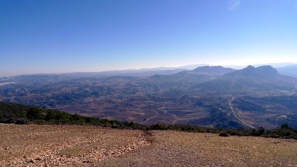
Nov 26

Nov 24
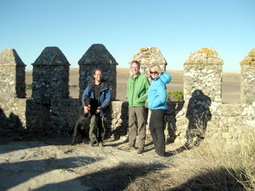
Nov 23
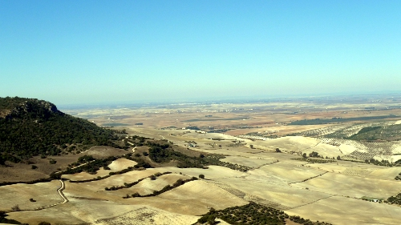
Nov 22
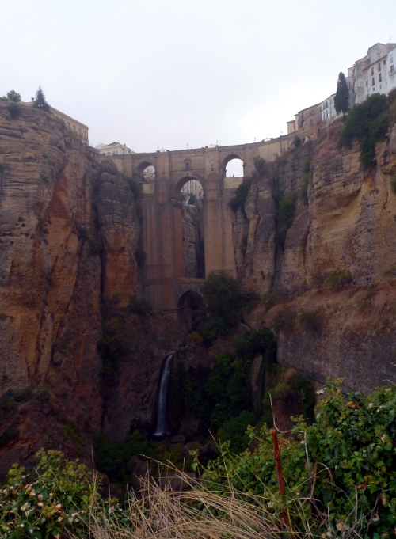
As an alternative, our new Australian friends offered us a ride to beautiful Ronda, which has enough sights for a day of exploring. Especially the gorge was gorgeous!
Oct 14
Another great week of flying has come to an end. Last flight on an A320 back from Sofia to Eindhoven. Views were good.
Oct 13
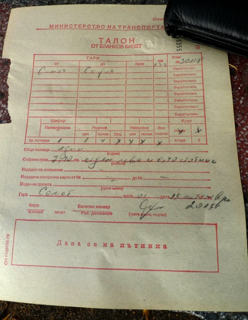
Oct 12
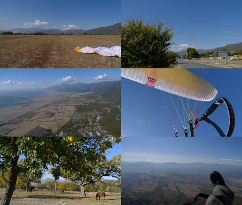
It started with just some playing around. On the second flight, it became clear that something had changed in the atmosphere and there were serious thermals waiting to be used. After about an hour of circling over the launch, but around 600 meters higher, I got an idea: why not go on an adventure and see how far I can go?
Off I went to the West. The first village was passed, then the second and third, and the fourth. After that, it was becoming hard to keep the height, as the clouds were a bit far over the mountains to be reachable. The search for a good landing field was started, but finding a nice one was not difficult. After a gentle landing, I packed the glider and walked into the village кърнаре, had the largest ice-cream the mini-marked had in the freezer and sat down at the bus-stop. No bus would come however…
After some waiting, I decided that walking back the 13 kilometers to Sopot would be a good option. Only when I passed the same field that I had landed in about an hour earlier, I spotted another glider on final approach. It turned out to be a Bulgarian from Plovdiv who knew the region. He called his daughter to pick him up and offered me a ride back. Excellent!
Another shorter flight with a similarly interesting landing on a dirt road followed and was a perfect end of the day. This is what makes the flying over here so good: you can do as you please and it is never a problem. What a difference from the Alps!
Oct 11
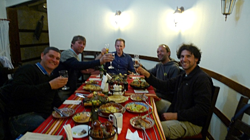
The flying today was nice as well, but too much action for taking pictures…
Oct 10
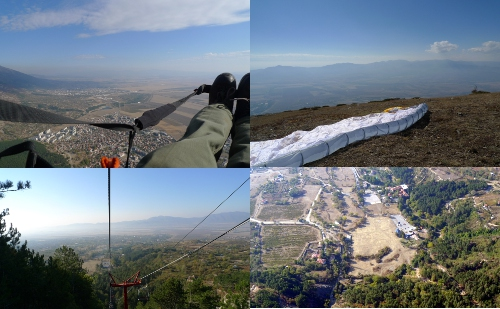
Oct 09
The excellent thing about flying here in Bulgaria: you are allowed to land wherever you like. The only warning they give is that it is wise not to land too close to a gypsy ‘village’ as a crowd will gather rather quickly and that landing close to a main road improves your chances of getting a lift back before dark… I didn’t need all this as it was a bit too cloudy for long flights today. I managed to nicely land in the middle of the interesting little landing area next to the Shambhala chairlift. Maybe tomorrow? The forecasts surely look very promising.
Oct 08
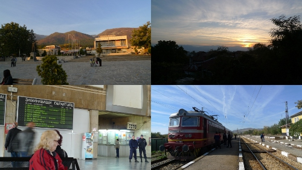
Sopot really is a nice little town, where things did not change as fast as in most parts of the world. So good to be out of the big city again. Here, the smell of wood-burning stoves fills the evening air and people prefer to walk to the mineral water springs instead of using the tap-water. Staying here until the end of the week will not be hard. The weather even looks promising for flying, but that is for tomorrow…
Oct 07
Another fantastic free guided tour here in Sofia. The guide told us many interesting stories and showed us around for 2.5 hours. One amazing bit was these hot-water springs where many people fill their bottles with the 39 degrees hot mineral water that supposedly makes you happy. I did feel happy, but the sunshine and great city must have had it’s part in that as well.
Off into the countryside tomorrow…
Oct 06
Aug 10
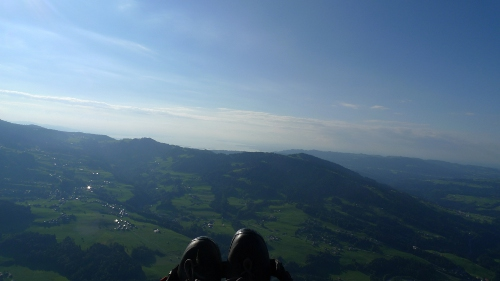
Aug 09
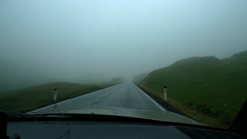
Aug 07
We moved South due to the weather forecast: winds in Garmisch increased too much. After a 3 hour trip over the Alps, the Austrian part of the Dolomites is our new playground for the coming days. Very hot (40 degrees) and a bit windy as well, but fantastic quiet start locations. It is good to learn about new flying sites. Two interesting flights today, with views of the Dolomites. Weather a bit unstable though…
Aug 05
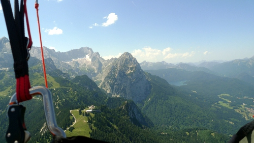
Jul 14
Beautiful day again! Sometimes it was pretty hard to stay up there, at other times I was shooting up at +8 m/s! Great fun and a good last day of my long weekend here.
Jul 13
After a short morning flight (I was on the mountain a bit too early for a nice flight, but practicing extra starts and landings is always good), the two flights I did in the afternoon were all I could hope for: way high: 600 meters above launch on the second flight and 700 meters on the third flight. The duration was awesome as well: A little over 2.5 hours of flight time were logged today, brilliant!
Jul 12
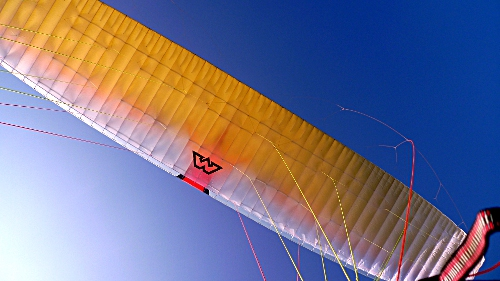
It was a bit busy at the launch site, but once in the air, I was lifted up by the thermals, away from the bustle of the start. The inversion layer was not that high today (climbing stopped abruptly 500 mters above the launch), but still the best I have ever seen in Andelsbuch (or is it this superb glider?). Anyway, a fantastic day that that could have been spent at work…